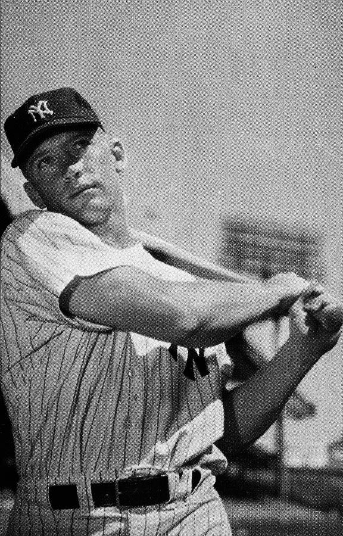
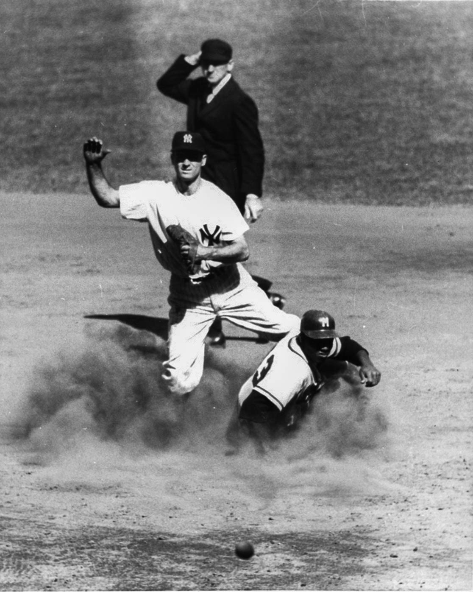

Despite contending late into the season, the 1948 Yankees finished in third place. Harris was released and the Yankees brought in Casey Stengel to manage. At the time, Stengel had "a reputation as a bit of a clown", according to Appel, and had been unsuccessful in two previous MLB managing stints. As the Yankees' manager, he optimized matchups by using a platoon system, playing more left-handed batters against right-handed pitchers. Numerous injuries affected the team during the 1949 season but it battled with the Red Sox for the AL pennant; before a season-ending two-game series at Yankee Stadium, New York trailed Boston by one game and needed a pair of wins. By scores of 5–4 and 5–3, the Yankees won the two games and the league championship. New York won a World Series rematch with the Dodgers in five games. Stengel was named AL Manager of the Year in his first season. The Yankees faced another competitive pennant race in 1950, as the Tigers joined New York and Boston at the top of the AL. Late in the season, the Yankees broke a tie with the Tigers for first place and went on to win the pennant. In the 1950 World Series, the Yankees swept the Phillies; the second game was decided by a DiMaggio home run in the tenth inning. Following the season, Yankee Phil Rizzuto was named AL MVP after recording 200 base hits during the regular season.
DiMaggio played his final MLB season in 1951, while highly touted outfielder Mickey Mantle made his debut for New York. Pitcher Allie Reynolds threw two no-hitters during 1951, as the Yankees claimed the AL pennant for the third straight year. They then won the 1951 World Series against the Giants, four games to two. When their 1952 team took the AL pennant, the Yankees had an opportunity to match the four straight World Series championships won by the team from 1936 to 1939. In another Yankees–Dodgers matchup, New York fell behind three games to two, but victories in games six and seven gave the Yankees the title. New York and Brooklyn were matched again in the 1953 World Series, and a Billy Martin base hit that decided the sixth and final game of the Series gave the Yankees another four games to two victory and a fifth title in a row. As of 2019, the 1949–1953 Yankees are the only MLB teams to win five straight World Series; no team since has won more than three in a row.
The Yankees won 103 games in 1954, the most yet for a Stengel-managed team, but the Indians took the pennant with a then-AL record 111 wins. One year later, the 1955 Yankees faced the Dodgers in the World Series. After the teams split the first six games of the Series, the Yankees lost the seventh and final game 2–0, giving the Dodgers their first Series win. Elston Howard, the first African American player in Yankees history, made his debut in 1955. His arrival came eight years after MLB's color line had been broken, as the Yankees' management had sought to avoid integrating the club's roster. As teams such as the Dodgers added black players, the Yankees turned down numerous opportunities to acquire Negro league talent. Management feared alienating white fans and harbored stereotypes of African American players. Author Robert Cohen called these views "symbolic of the overall arrogance of Yankee ownership and management, as well as their prevailing racial attitudes."
In 1956, Mantle won the MVP award for a season in which he led the AL and MLB in batting average (.353), home runs (52), and RBIs (130), becoming the second Yankee (after Gehrig in 1934) to win a Triple Crown. The 1956 Yankees won the franchise's seventh AL championship under Stengel and advanced to a World Series rematch with the Dodgers. In Game 5, with the Series even at 2–2, Yankees pitcher Don Larsen threw a perfect game. In seven games, the Yankees won the Series.
By 1957, the Yankees had won 15 of the last 21 AL pennants. The team's minor-league system had been reduced to 10 teams from a peak of 22, and its scouting system was acclaimed by Sports Illustrated's Roy Terrell as "the best in all baseball." Instead of signing many players for their organization, the Yankees concentrated on acquiring a smaller number of highly skilled players, according to head scout Paul Krichell. The club recruited players by selling them on the "fame, fortune and fat shares of a World Series pot" that came with making New York's roster.
The 1957 Yankees reached that year's World Series, but lost in seven games to the Milwaukee Braves. Following the Series, the Giants and Dodgers left New York City for California, leaving the Yankees as New York's only MLB team. Despite their status as the sole New York City-based franchise, the Yankees' 1958 attendance decreased from previous seasons as the team could not attract bereft Giants and Dodgers fans. In the 1958 World Series, the Yankees had an opportunity to avenge their defeat to the Braves. The Yankees fell behind by losing three of the first four games, but won the final three games of the Series to claim another championship. The Yankees were unable to defend their AL and World Series championships in 1959, as they ended up with a 79–75 record, their worst record since 1925, good for third place.
When Arnold Johnson (a friend of Topping and Yankees general manager George Weiss) became the owner of the Kansas City Athletics in 1955, his new team made many transactions with the Yankees. From 1956 to 1960, the Athletics traded many young players to the Yankees for cash and aging veterans. The trades strengthened the Yankees' roster, but brought criticism from rival clubs. Before their 1960 season, the Yankees made one such trade with the Athletics in which they acquired outfielder Roger Maris. In his first Yankees season, Maris led the league in slugging percentage, RBIs, and extra base hits, finished second with 39 home runs, and won the AL MVP Award. The 1960 Yankees won the AL pennant for the 10th time in 12 years under Stengel, and outscored the Pirates 55–27 in the seven World Series games. However, the team lost four of them, falling short of a Series championship after Bill Mazeroski hit a walk-off home run in the final game, ending a contest that Appel called "one of the most memorable in baseball history." The season turned out to be Stengel's last as Yankees manager; he indicated that his age played a role in the team's decision, saying, "I'll never make the mistake of being seventy again."
Ralph Houk was chosen to replace Stengel. During the 1961 season, both Mantle and Maris chased Ruth's single-season home run record of 60, and the pair attracted much press attention as the year progressed. Ultimately, an infection forced Mantle to leave the lineup and bow out of the race in mid-September with 54 home runs. Maris continued, though, and on October 1, the final day of the season, he homered against Red Sox pitcher Tracy Stallard into the right field stands of Yankee Stadium, breaking the record with 61. Commissioner Ford Frick decreed that two separate records be kept, as the Yankees played a 154-game schedule in 1927 (beginning in 1961, AL teams played 162 games to accommodate the league's expansion to 10 teams). MLB did away with the dual records 30 years later, giving Maris sole possession of the single-season home run record before it was broken in 1998 by Mark McGwire. The Yankees won the pennant with 109 regular season wins, at the time the club's second-highest single-season total, and defeated the Cincinnati Reds in five games to win the franchise's 19th World Series. The team hit 240 home runs to break the MLB single-season record. Maris won another AL MVP Award, while Whitey Ford captured the Cy Young Award, having posted a 25–4 record. The team gained a reputation as one of the strongest the Yankees had fielded, along with the 1927 and 1939 Yankees. New York returned to the World Series in 1962, facing the San Francisco Giants. After exchanging victories in the first six games of the Series, the Yankees won the decisive seventh game 1–0 to clinch the title.
The Yankees again reached the World Series in their 1963 campaign, but were swept in four games by the Los Angeles Dodgers. Houk left the manager's position to become the team's general manager and the newly retired Berra was named manager. After dealing with player injuries and internal dissension, the Yankees rallied from third place late in the 1964 season and won the AL pennant by one game over the White Sox. It was their fifth straight World Series appearance and fourteenth in the past sixteen years. The team faced the St. Louis Cardinals in a series that included a walk-off home run by Mantle to end the third game. Despite Mantle's game-winning hit, the Yankees were defeated by the Cardinals in seven games, and Berra was fired.